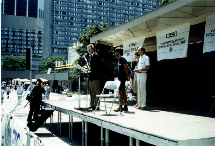

Previous
Day
Previous
Day Next Day
Next Day
Up bright and early and down to CBC. I got interviewed by Joe Cote on Metro Morning. That went quite well.
After that I picked up my stuff at the O.s' and rode to Bob's apartment. He was there, so I talked to him for a while. Got a key.
Then went to the CUSO office and planned the onslaught on city hall. At 1
p.m. I was at Nathan Phillips Square. Was met by the mayor, Art Eggleton
,
and he presented me with a
Sesquicentennial coin. Some kids even wanted my autograph (giggle).
Went to lunch with the CUSO group. Then back to the apartment. Sort of collapsed. I eventually got going again.
Had supper in a neat little bistro and then saw Ghostbusters, which was really funny.
Previous
Day
Next Day
 Dave's Page
Dave's Page
 Home
Home